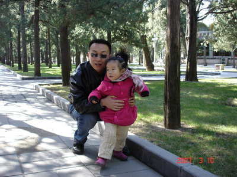
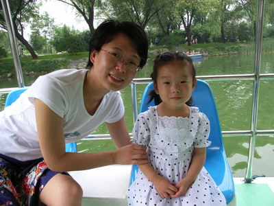

两岁以后，看着像个有思想的小人儿了，还不用学习、没有压力、整天的任务就是无忧无虑的玩耍，这也许是一辈子里面最幸福的时光了吧。可惜的是这段时光在长大后的记忆里却不留痕迹。
在上幼儿园之前的这段日子里，曼曼身体健康、茁壮成长。白天在小区里荡秋千、滑滑梯、散步，或是在家中属于她的小乐园里玩积木和小娃娃；晚上听爸爸妈妈讲故事、一起玩耍。周末的时候，爸爸妈妈总会带她去公园、动物园、游乐园，很珍惜和小闺女共处的时光。

曼曼周末经常会和丁丁弟弟、嘟嘟妹妹一起玩，不过她嫌他们太小，她更喜欢和哥哥姐姐玩儿。
夏天的时候，曼曼的姥姥姥爷到北京来玩。也不知道姥姥怎么教育的，曼曼连着半个多月都没有尿裤子。以后虽然偶尔还是会尿裤子，但是大部分时候快尿的时候都会有所表示，基本上解决了尿裤子的问题。
年底的时候，曼曼的姑姑从美国回来了，不过只相聚了几天，就去上海工作了。毕竟近了很多，姑姑每逢节假日都要回北京和曼曼相聚几天。

曼曼和姑姑在一起多么淑女呀
五一的时候曼曼和爸爸妈妈、爷爷奶奶、姑姑一起去了沈阳。不过沈阳的故宫、大帅府对于她来说，最有趣的莫过于那些楼梯了。不管到哪里她都喜欢在楼梯上上上下下，从楼梯上一级一级跳下来，乐此不疲，其他的一概不喜欢。我们在某一天下午决定摆脱这个缠人的不懂欣赏的小家伙，让她和想休息的奶奶待在宾馆里，我们则悄悄地出门了。曼曼一直以为我们在房里睡觉，先是和奶奶高兴的玩了一阵，然后决定到我们房里来找我们。我们回来以后，奶奶向我们描述曼曼发现房里没人的时候，走到奶奶面前，充满委屈的问：“他们是不是出去玩去了？他们为什么不带我呢？”边说眼泪边在眼眶里打转。奶奶连忙把她带出来，在宾馆附近走来走去的找我们，一直等到我们回来。听得我们心里充满了内疚。
曼曼在沈阳的时候，经常编故事讲给我们听。一个故事叫“大灰狼出门，碰到了小山羊，就把小山羊啊呜一口吞到肚子里。可是小山羊实在太难吃了，大灰狼吧唧一口把它吐到地上，然后就呗呗呗呗的回家睡觉去了。”还有一个故事是“苍蝇飞到了洞里，它可真难管教呀……”。她十分认真地给我们讲这些故事，可爱极了。
不过，曼曼本事见长的同时，小脾气也见长。太爱撒娇、爱哭，窝里横。促使我和郭嘉开始认真地考虑送她上幼儿园的问题。